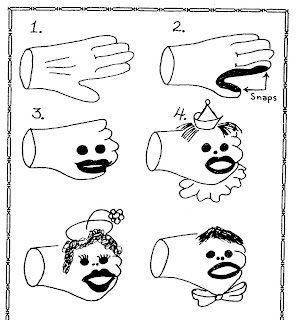

And the winners are...
1/14/2010
In 1977 Maher Studios published a book with instructions for building ventriloquist puppets and figures. The book, Build It Yourself, has been out of print for a number of years, but I recently had occasion to reprint several copies due to a reader request. As I was doing so, I reread a chapter on how to make a glove puppet. Remembering a related post several weeks ago, I will publish here a condensed version of this chapter.
USE YOUR HAND
by "Cleo the Enchanted Clown"
Some of you may remember Senor Wences who painted a mouth on his bare hand, added a wig, eyes, and finally a body and there came to life "Johnny"! Jay Marshall came on TV in the '50's with a white glove, two black button eyes, held a pair of long white ears and I saw "Lefty" come to life for the first time.
With practically no investment and only a little bit of work you can come up with a similar, very entertaining bit of business. The illustrations show the process of creating your own glove friend.
{kind=link}

The snap or hook eye between thumb and forefinger will aid in control of mouth movement. I begin with a white glove. Holding my palm up I attach the various parts of the face which are held in place with hooks and eyes already attached to the glove and painted white.
I tell a short story during this bit, something to the effect that since I travel a great deal I often get quite lonely, so I've invented an imaginary friend. Most children have an imaginary friend at one time or another. Then I introduce Willie and go into a typical vent routine.
So this presentation is quite simple. Figure 4 shows some minor changes that can be made to alter the character. Try it, you'll like it - and the kids will too!
* * * * *
From Clinton: I printed five extra copies of Build It Yourself. We've drawn the names (see post below) of the following winners, each to receive one signed copy:
1. (unclaimed), 2. Doc Lowrey, 3. Ron Scherer, 4. (unclaimed), and 5. Donald Woodford.
* * * * * *
Note: Winners of drawings have 14 days to contact me to claim their gift or prize. After that period of time, unclaimed prizes are forfeited, and names of new winners will be drawn at a future date.